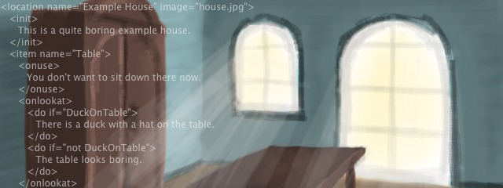
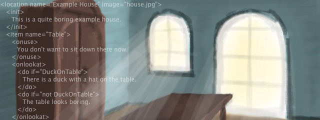

Welcome
WebTale is a free engine for web based adventure games. It’s written in JavaScript and HTML/CSS, so the games can be played on any platform (even on mobile phones). It doesn’t use any server backend (no PHP etc.), games can be played offline or on any web space. The story of a game is written in XML format, there is no need to know programming.
Starting with version 1.4 the use of a server (PHP/MySQL) is optional for storing savegames (made to run games in Facebook or other social networks). Without a server savegames are stored locally in the browser.
Links
Download
History
1.4 - Added support for savegames on a server, added Facebook share dialog.1.3 - Improved user interface, fixed CSS for mobile devices.
1.2 - Added "Save" and "Load"
1.1 - Cleaned version with manual
1.0 - First version used in the game "Die Suche nach dem Monster"